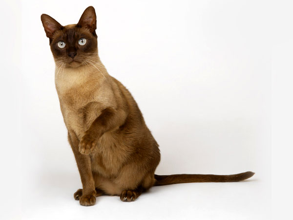
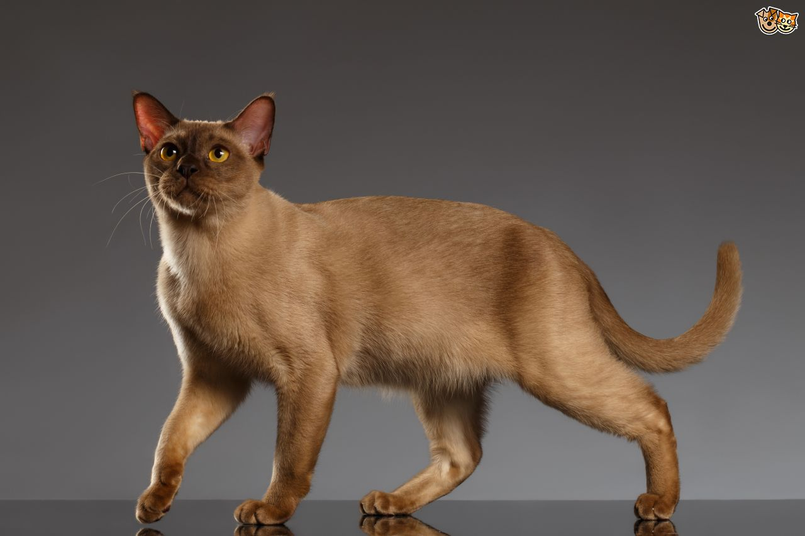

ABOUT BURMA

Burmese, or burmanskaya short-haired cat - a breed of short-haired cats.
The cat is distinguished by a muscular, strong body,
short shiny hair, large round eyes of yellow color.
Burmese are affectionate, playful,
attached to man, tolerant to the neighborhood with other cats, and also with dogs.
History of the breed

In Burma, these cats were kept in the temple and considered a reincarnation of deceased monks.
In the mid-1920s, two Europeans helped monks defend the Lao-Tsung monastery,
and in gratitude they were given a pair of such cats.
Only one cat came to France, which gave birth to kittens.
It is believed that all Burmese cats come from these two donated cats.
Recently, enthusiasts have gained access to Tibet.
They report that in this region there are cats of similar color.